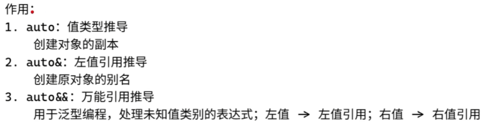
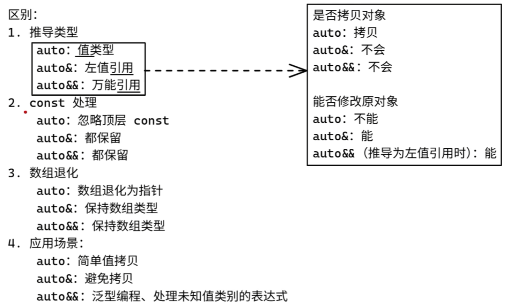
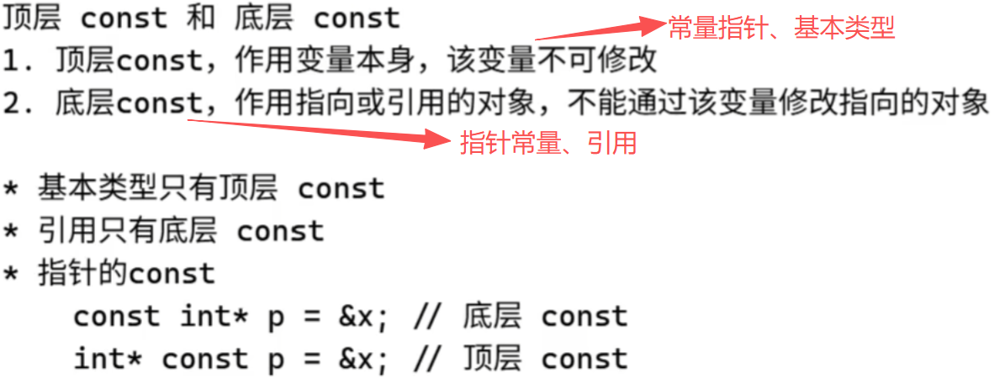

auto,auto&,auto&& 的作用和区别？
指针数组、数组指针
首先要先区分好什么是指针数组，什么是数组指针：
- 常量指针：指向的值不可修改，不可变的是指向的地址的值。
- 指针常量：指针的地址不可修改，不可变的是指向的地址。
1
2
3
4
5
6
7
8
9
10
11
12
13
14
15
16
17
18
19
20
21
22
23
|
#include<iostream>
int main() {
int num = 1;
int num2 = 10000;
const int* a = # // 常量指针：指向的值不可修改
int* const b = # // 指针常量：指针的地址不可修改
std::cout << *a << std::endl; // Outputs: 1
std::cout << *b << std::endl; // Outputs: 1
// 我们尝试修改a和b所指向的值：
// *a = 2; // 报错：不能通过常量指针修改值
*b = 2; // 有效：可以通过指针常量修改值
std::cout << num << std::endl; // Outputs: 2
// 我们尝试修改a和b所指向的地址：
a = &num2; // 有效：可以改变常量指针指向的地址
std::cout << *a << std::endl; // Outputs: 10000
// b = &num2; // 报错：不能改变指针常量指向的地址
return 0;
}
|
输出：
auto 值类型推导
1
2
3
4
5
6
7
8
9
10
11
12
13
14
15
|
int a = 1;
auto va = a; // va 被推导为 int 类型
const int b = a;
auto vb = b; // vb 被推导为 int 类型，const 修饰符被忽略
const int* p1 = &a; // 常量指针
auto vp1 = p1; // vp1 被推导为 const int* 类型，指针的 const 修饰符被保留
int* const p2 = &a; // 指针常量
auto vp2 = p2; // vp2 被推导为 int* 类型，指针常量的 const 修饰符被忽略
const char name[] = "example";
auto vname = name; // vname 被推导为 const char* 类型，退化成指针了
|
推导结果如下图所示，我用的是VS Code中的clangd插件，可以直接看见推到结果，下同。
auto& 左值引用推导
1
2
3
4
5
6
7
8
9
10
11
12
13
14
|
int a = 1;
auto& ra = a; // ra 被推导为 int& 类型
const int b = a;
auto& rb = b; // rb 被推导为 const int& 类型，保留 const 修饰符
const int* p1 = &a; // 常量指针
auto& rp1 = p1; // rp1 被推导为 const int*& 类型，保留指针的 const 修饰符
int* const p2 = &a; // 指针常量
auto& rp2 = p2; // rp2 被推导为 int* const& 类型，保留指针常量的 const 修饰符
const char name[] = "example";
auto& rname = name; // rname 被推导为 const char (&)[8] 类型，保留数组的 const 修饰符
|
推导结果如下图所示，我用的是VS Code中的clangd插件，可以直接看见推到结果，下同。
auto&& 万能引用推导
1
2
3
4
5
6
7
8
9
10
11
|
int a = 1; // 左值：变量有名字，有地址；
auto&& ua = a; // ua 被推导为 int& 类型（左值引用）
const int b = a;
auto&& ub = b; // ub 被推导为 const int& 类型（左值引用）
// 2是右值：字面值，无名字，无地址；
auto&& uc = 2; //被推导为 int 类型（右值引用）
const char name[] = "example";
auto&& uname = name; // uname 被推导为 const char (&)[8] 类型（左值引用）
|
推导结果如下图所示，我用的是VS Code中的clangd插件，可以直接看见推到结果，下同。
总结和推导结果解释

auto,auto&,auto&& 的作用
除了auto是值类型以外，auto&和auto&&都是引用，因此也只有auto会拷贝对象。并且在处理const的时候，auto也不同于auto&和auto&&，会忽略掉顶层const保留底层const，而auto&和auto&&会同时保留顶层const和底层const。

auto,auto&,auto&& 的区别
也就是说，const可以被分为两种：
- 顶层const：包括常量指针、基本类型 作用于变量本身，该变量不可修改。
- 底层const：包括指针常量、引用。 作用于指向或引用的对象，不能通过该变量修改指向的对象。

顶层const和底层const的含义
各种方法是否拷贝对象
是否拷贝我们只需输出一下变量的地址即可得知。
1
2
3
4
5
6
|
int a = 1;
auto va = a; // va 被推导为 int 类型， 拷贝，内存地址不同
auto& ra = a; // ra 被推导为 int& 类型， 引用，内存地址相同
auto&& ua = a; // ua 被推导为 int& 类型， 引用，内存地址相同
std::cout << &a << ", " << &va << ", " << &ra << ", " << &ua << std::endl;
|
输出：
1
|
0xcfa3ff768, 0xcfa3ff764, 0xcfa3ff768, 0xcfa3ff768
|
每次运行输出都会变化，但a、ra和ua的地址是始终相同的。